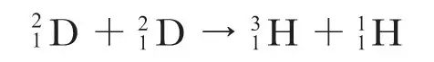
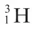
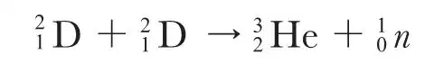
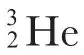
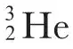
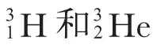

英文
英文奥利芬特等
编者按
当美国物理家们将新发现的氢的同位素（氘）称为“deuterium”的时候，他们的英国同行则坚持使用“diplogen”这一叫法。这篇文章中，马克·奥利芬特和保罗·哈特克在剑桥同卢瑟福合作，描述了一个似乎包含两个氘原子核（“氘核”）反应的实验。他们用氘置换铵化合物中的氢，然后用低能的氘去轰击它们。研究者们指出，如果两个氘核结合在一起形成一个氦核，那么这个氦核的原子质量会比已知的氦的原子质量略大。所以该反应得到的原子核会是高度不稳定的，并且会立即开始衰变，放出质子和中子。对假定衰变产物（氦–3和氢–3，后者或称为氚）的鉴别有待进一步的实验改进。 英文
我们进行了以下的实验，用氘核轰击氯化铵（NH4Cl）、硫酸铵（(NH4)2SO4）、正磷酸（H3PO4）等样品，使得化合物中的大部分氢被氘置换。当这些氘化合物受到强的质子束轰击时，这些化合物和普通氢化合物没有表现出太大区别。然而，当用重氢离子轰击时，即便是在20,000电子伏的能量下也能探测到大量快质子发射。在100,000电子伏时，这个效应则太强以致于我们的放大器和示波器不能对其进行跟踪。质子群有14.3厘米的固定射程，对应3兆电子伏发射能量。除此之外，我们还观察到了一个射程约1.6厘米的单电荷粒子群，数量和14厘米的质子群相同。在不同的样品中，还观测到了其他弱的粒子群，但是到目前为止，我们还不能确定这些反应就是氘核之间的初级反应。 英文
除了这两个质子群，我们还观察到了大量的中子。这些中子中能量最大的约为3兆电子伏。对产生中子数目的粗略估算表明，产生中子的反应比产生质子的反应的频度要低。 英文
现在得出确切的结论还为时过早，我们倾向于用以下方式来解释这些结果。当能量高达300,000电子伏时，无论用α粒子轰击还是用质子轰击，氘核都不会发生破裂，这对我们来说似乎是具有启发性的。因此，当氘核在更小的能量下与另一个氘核发生碰撞时，似乎就更不可能发生破裂了。更有可能的是，两个氘核结合而形成一个新的氦核，其质量为4.0272，电荷数为2。这个新的原子核的过剩能量比质量为4.0022的普通氦核的大，这一过剩能量明显是很难去除的，除非分裂为两部分。一种可能性是按照以下的反应发生分裂：

在这种情况下质子的射程是14厘米，而我们所观察到的1.6厘米的射程与根据动量关系估算出的

粒子的射程吻合得很好。从质能关系计算得到这种新的氢同位素的质量为3.0151。 英文
另一种可能发生的反应是：

其产生一个质量为3的氦同位素和一个中子。在之前的一篇文章中，我们指出，6Li被质子轰击后会转变为两个带双电荷的粒子，这样就产生了质量为3的氦同位素。如果最后的这个反应是正确的，那么

的质量应为3.0165，利用这个质量和查德威克给出的中子质量进行计算，得出中子的能量约为3兆电子伏。根据动量关系，反冲的
粒子的射程应该约为5毫米。由于存在很多干扰因素，观测并记录这样短射程的粒子是困难的，但是正在进行中的实验正试图去探测这样的粒子群。在探测所需的短时间内，
原子核似乎是稳定的，它们的持久性问题还需要更进一步地探讨。 英文
（王静 翻译；张焕乔 审稿）